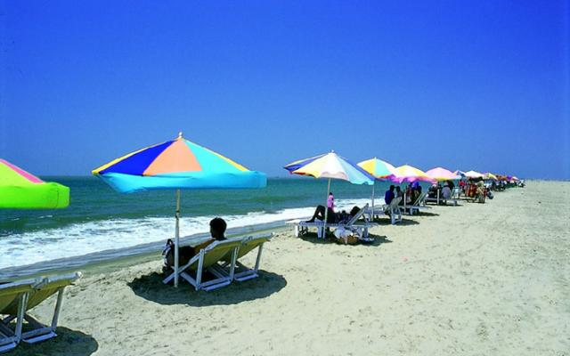

Feeling blue? Wanna dive into the blissful ocean? Or perhaps a beach volleyball tournament on the sandy beach? Or you may want to fancy a fruit cocktail. We have just the thing for you!
Cox’s Bazaar sea beach is the longest beach in the world. And this is definitely one of the biggest tourist attractions in the country. Located in Chittagong District, this sea beach faces the amazing waves of grand Bay of Bengal.
this sea beach faces the amazing waves of grand Bay of Bengal.
Miles of golden sands, towering cliffs, surfing waves, rare conch shells, colorful pagodas, Buddhist temples and tribes and mouth-watering sea-food made Cox’s Bazar the tourist capital of Bangladesh. There’s a plenty of things to do in Cox’s Bazar. This is more than you can expect from a traditional sea beach.
This Buddhist village is about 16km away from Cox’s Bazar situated on the main road to Chittagong. There are monasteries, khyangs and pagodas with great religious importance which are rich in years old artifacts, scripts, relics etc. There’s a large bronze statue of Buddha measuring more than thirteen feet height. The people of this Buddhist village has their own charm for being delicate and peace-loving.
About 32km south of Cox’s Bazar, Himchari is a delightful place for famous broken hills and waterfalls.
Inani beach is only half an hour’s drive from Cox’s Bazar. With the sea to the west and a background of steep hills to the east, this beach will mesmerize with its amazing view.
While shopping in Cox’s Bazar, your hands will be filled with bags full of tribal handicrafts, clothes, shell etc. within a moment. There are plenty of stores along the beach and in the town market filled with eye-catching items. You will forget when to stop.
And there is always a chance to get sporty against the waves of Bay of Bengal!
An island off the coast of Cox’s Bazar. It has an area of 268 square kilometers. Through the centre of the island and along the eastern coast line rises a range of low hills, 300 feet high; but the coast to the west and north is a lowlying treat, fringed by mangrove jungle. In the hills on the coast is built the shrine of Adinath, dedicated to siva. By its side on the same hill is Buddhist Pagoda.
Hotel Sea-gull Hotel Motel Zone Cox’s Bazar Sea Beach, Cox’s Bazar, Bangladesh. Tel : +88 0341 62480 – 90 Cell : +88 01196000511, +88 01196000513, +88 01196000515, Fax : +88 0341 64436 Email : reservations@seagullhotelbd.com
Hotel Sea Crown Marin Drive, Kola Toil New Beach Kolatoli, Cox’s Bazar, Bangladesh Phone : 88-0341-64795, 88-0341-64474 Mobile : 88-01817089420 Email : seacrownhotel[at]gmail com
Hotel Sea-Palace Limited. Kolatoli, Cox’s Bazar Phone : 88-0341-63792, 88-0341-63692, 0341-63794, 0341-63826, 63853 Mobile : 88-01714 652 227 01714 652 228, 01833148386-7 Fax : 88-0341-63769 Email : cxb[at]hotelseapalaceltd.com seapalace@gmail.com
Long Beach Hotel ltd. 14 Kalatoli Main Road, Hotel Motel Zone, Cox’s Bazar, Chittagong. Phone No. : +88 0341 51843-6, Fax : +88 0341 51062
Hotel Coral Reef Distance : 1 Km from the sea beach. Communication : By Bus and Airlines from Dhaka. Facilities : Air condition room, Running hot & cold water, Minibar. Each room with belcony, Family suite with kitchen and internet facilities. Address : Hotel Coral Reef, Plot # 47, Block # B, Kalatoli, Coxs Bazar , Bangladesh Cell: (880) 01911-672135 or 01712-849373
Uni Resort Ltd Distance : 1 Km from the sea beach. Communication : By Bus and Airlines from Dhaka. Facilities : Game Zone, Coffee & Pastry Shop, Stand by Generator, Business Centre, Restaurant, 24 hours room service, Gift shoop, Business centre. Game Zone and Conference hall with Multimedia projector and sound system. Address : Uni Resort Ltd, Kalatoli, Coxs Bazar , Bangladesh Cell:(880) 01911-672135 or 01712-849373
Hotel Mishuk Distance : 40 Meters from the sea beach. Communication : By Bus and Airlines from Dhaka. Facilities : Full time generator service , Gizzard, Disline, Lift, Intercom. Balcony with every room, Near sea beach, News paper, 24 hours room service and Lift. Sea foods restaurant with Air conditioner, Local and International food, 24 hours room service. Address : Hotel Mishuk, Labonee More, Hotel Motel Zone, Cox’s Bazar, Bangladesh Cell: (880) 01911-672135 or 01712-849373
Nitol Bay Resort Distance : 1 Km from the sea beach. Communication : By Bus and Airlines from Dhaka. Facilities : Fully AC, Swimming Pool, Roof Top lake, BBQ house, Restaurant, Internet. Swimming Pool, Roof Top lake, BBQ house, Homely service. Address : Nitol Bay Resort, Kolatoli Beach Road, Cox’s Bazar, Bangladesh Cell: (880) 01911-672135 or 01712-849373
Green Line paribahan Head Office : 9/2, Outer Circular Road, Momen Bagh, Rajarbagh, Dhaka – 1217. Tel : 8331302-4, 8353004-5, 9339623, 9342580 Fex : +088-02-8350003 Email : greenline@greenlineparibahan.com.